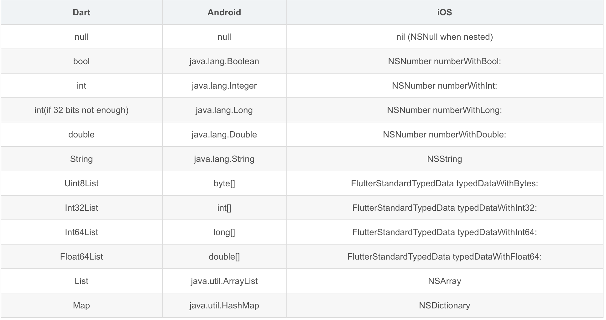

Dart 库相关
导入库
1 | // 完全导入 |
库拆分
1 | 使用part的形式，库之间共享空间，即color_extension.dart中的私有内容，flutter_star_extension可以直接使用 |
导入库
1 | // 完全导入 |
库拆分
1 | 使用part的形式，库之间共享空间，即color_extension.dart中的私有内容，flutter_star_extension可以直接使用 |
Channel 提供标准的消息解码器来为我们在发送及接收数据自动进行序列化及序列化；
支持的数据类型

codec，MessageCodecx 协议
进入到你的 flutter sdk 目录中，然后找到 bin/cache/lockfile 文件，删除它即可。
1 | let view = UIView(frame: CGRect(x: 0, y: 0, width: 100, height: 100)) |